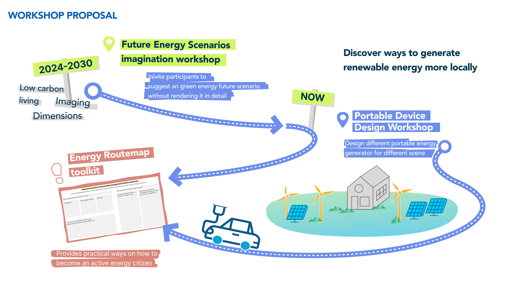
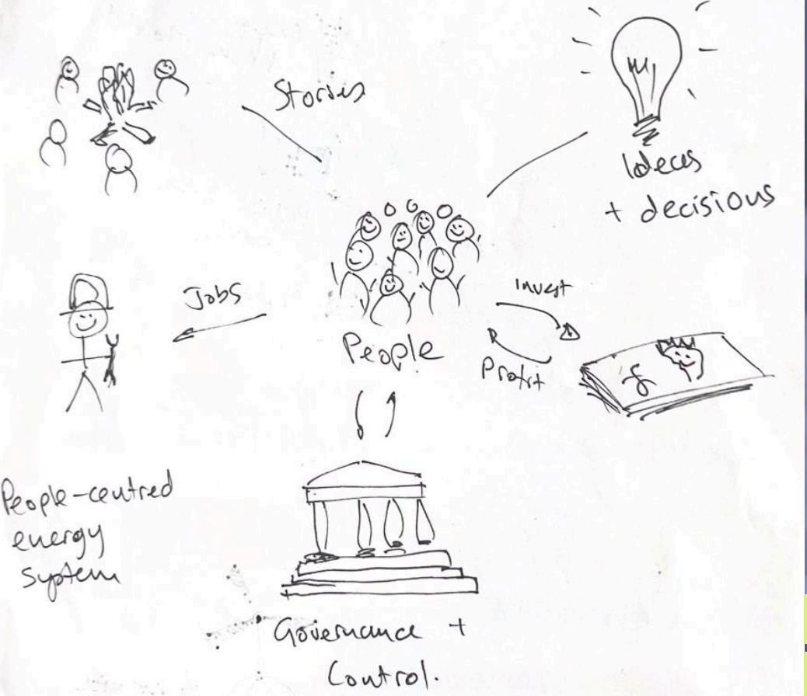
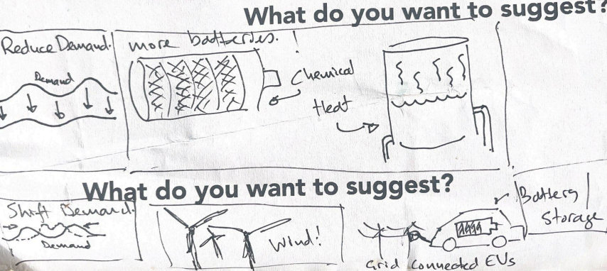
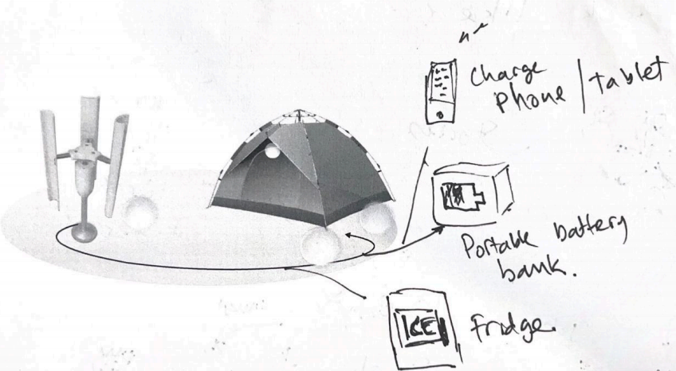

01 — Overall Strategy
Roadmap to make life
Greener
Despite high media awareness of renewable energy, actual adoption remains low due to technological, financial, and socio-cultural barriers. This design helps people become active energy citizens through renewable energy awareness.
02 — Process & Scope
The Methodology
- • Desk Exploration: Policy & Eco-villages
- • Field Work: Interviews & Workshops
- • Ideation: Leaflet & Web Demos
Key Partners
Collaborated with Friends of the Earth Scotland and researched Community Energy Scotland.
03 — The Challenge
Bridging the Agency Gap
Most people act as "Passive Consumers"[cite: 317]. Engagement is hindered because:
The Literacy Gap: Current utility providers communicate in abstract data points like "kWh," which hold zero emotional or practical meaning for the average person.
The Financial Barrier: There is no middle ground between "doing nothing" and high-upfront investments, such as community energy membership fees of approximately £5,500/year.
Social-cultural Inertia: Many residents perceive energy deployment as the government's responsibility, leading to "free-riding" and behavioral inertia.
Behavioral Insights
Micro-verification: Research showed that while users fear large-scale installations, they are willing to experiment with portable kits. Successfully charging a laptop via solar builds the "Trust Threshold" necessary for future community investment.
Translating Data into Life: We replaced "kWh" with Lived Experience Metrics. Instead of tracking energy units, the system focuses on tangible outcomes, such as: "Can I work for 8 hours on my balcony?".
The Digital Meadow: I introduced a growth mechanic where energy generation is visualized as an ecological system. This transforms invisible utility into an emotionally rewarding asset.

Progress towards energy targets (26.7% current vs 50% target) [cite: 67, 68]
04 — System Architecture
The Point-Line-Area Model
The product logic is structured as a scalable ecosystem that grows with the user’s confidence and involvement:
Point(Experience): Portable Device
Low-cost, entry-level hardware for immediate personal experimentation and "trying before committing".
Line(action): Eco-Home
Transitioning from portable devices to household-level planning, integrating renewable suppliers and small-scale home generators.
Area(participantion): Community Energy
Community Grids: Collective ownership of energy parks on derelict land, moving toward a full 2030 Eco-City Vision.
Interaction Logic
Human-Scale Metric [cite: 284]
"Can I work for 8 hours on my balcony?" is more engaging than data-heavy kWh units[cite: 239, 414].
05 — Stakeholder Synergy
Aligning the "Line of Visibility"
"It’s all about syncing personal action with institutional support. We’ve turned energy into a visible and social asset, creating a real roadmap for citizens to move from the sidelines into active roles where they co-design and truly own their energy future."
Authority
Glasgow City Council provides funding and access to derelict land for community renewable projects.
Manufacturers
Collaborating on technical co-design to ensure portable kits are optimized for urban high-density living.
Community Hubs
Organizations like Friends of the Earth and local libraries act as the "on-ramp" for energy literacy.
Active Citizens
The core contributors providing micro-data and collective action to drive democratic energy strategy.
06 — Future Readiness
"Think of this framework as a synchronized ecosystem where individual agency meets institutional infrastructure[cite: 535]. By transforming energy into a visible, verifiable, and social asset, we are creating a definitive trajectory for citizens to move from the sidelines and start co-designing their own green future[cite: 453, 589]."
UX Rationale: While forward-looking, this roadmap provides a pragmatic 'on-ramp' for existing city policies[cite: 707]. By lowering the psychological and financial barriers through Micro-Verification, we turn conceptual 'Green Dreams' into a verifiable daily reality[cite: 251, 538].
Community Co-Design Workshops




Evidence: Primary research conducted with GALLANT, Friends of the Earth, and Glasgow City Council[cite: 372, 394, 417].